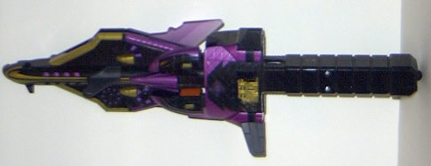
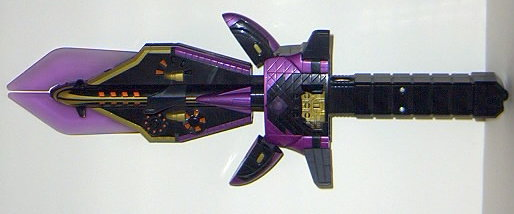
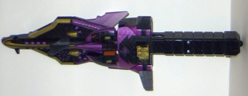
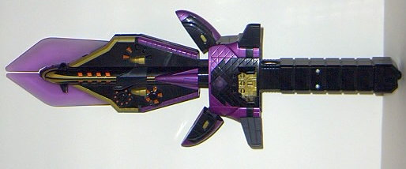
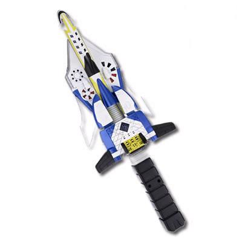
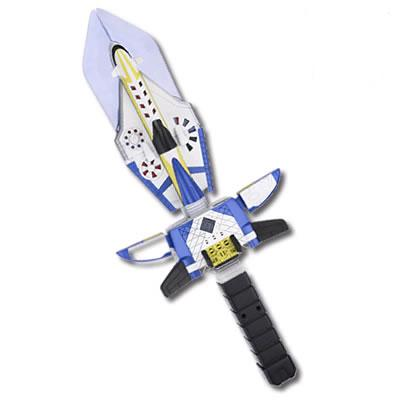

 
Allegiance : Decepticon
Size : Roleplay ($15)
Difficulty of Transformation : Very Easy
Color Scheme : Black, metallic purple, gold, and transparent light purple
Rating : 3.9
(NOTE: Since I don't have much to say about each of these roleplay toys individually, I've decided to review them both as a whole, with only a few comments about each individual sword.)
 Dark
Saber (Roleplay)
Dark
Saber (Roleplay)


Allegiance
: Decepticon
Size
: Roleplay ($15)
Difficulty of Transformation
: Very
Easy
Color Scheme
: Black, metallic purple,
gold, and transparent light purple
Rating
: 3.9
 Star
Saber (Roleplay)
Star
Saber (Roleplay)


Allegiance
: Autobot
Size
: Roleplay ($15)
Difficulty of Transformation
: Very
Easy
Color Scheme
: White, black, dark
blue, and some gold, yellow, and transparent light blue
Rating
: 3.6
The Roleplay Star Saber
and Dark Saber are both the exact same toy, but with different color schemes.
But they were both released at the same time, so I'm not sure which one
of them to call a repaint... Well, regardless, at least they look more
like an actual sword this time around. Of course, they certainly should,
considering that they can't really transform at all. Oh, the box SAYS that
they can, but basically a few plastic parts move out or in and you're done-
it's as much of a "transformation" as when you change your clothes. Still,
at least when you "transform" it by sliding the black lever in the center
of the toy, it makes a cool mechanical sound. The other two sounds are
when you swing the sword- it'll make too different swinging sounds, one
ending with a swish and one ending with a clank, depending on whether it's
in the sword mode of the dagger mode, respectively. On all sound effects,
a red light under a Minicon insignia in the center of the sword blinks
a few times. The molded and paint detailing is also satisfactory, although
not spectacular, and the small colored panels moving inside the sword is
kinda neat. However, what really gets me is that not only is this thing
incredibly small for a sword- it's barely over a foot long- but it's made
out of hard plastic. Which means that you can't actually fake-play with
it- what you're MEANT to do with it- because you might either break the
sword or break your head. And that's what really makes me deem it worthless,
even if it were perfect in all other respects. As for the color schemes
themselves, I like the purple, gold, and black scheme of the Dark Saber
better than the Star Saber, although the latter ain't half bad either,
and they're both good for their respective allegiances.
The Roleplay Star and
Dark Sabers are wastes of plastic, since you can't really DO anything with
them except swing them in the air a couple of times and quickly grow bored
of them. I'm not even going to recommend these to completists...
No Stats
Review by Beastbot
(Roleplay Star Saber pictures taken from Transformers.com .)